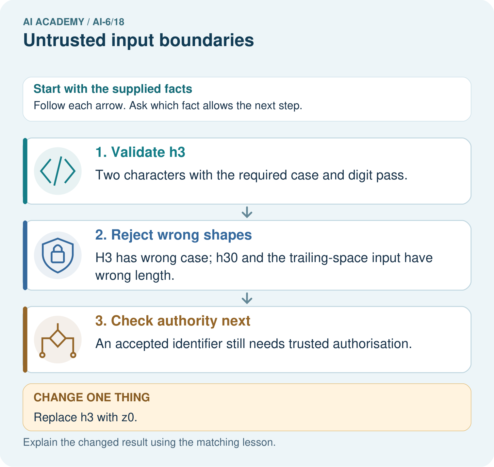

AI Academy · Level 6 · Grade 11 · Week 18 · Workbook
Untrusted input boundaries
Learn to understand, design, build, test and explain AI systems responsibly.
Project: Grounded Learning Service
Workbook · 1 of 13
Recall and choose your starting point
Try the recall before opening notes. Then use a different colour or a labelled second line to correct your explanation.
External side effects and recovery
Without opening the old lesson, explain one key idea from External side effects and recovery. Give an example and a mistake that the idea helps you avoid.
Approval gates and idempotency
Without opening the old lesson, explain one key idea from Approval gates and idempotency. Give an example and a mistake that the idea helps you avoid.
Logs traces and privacy
Without opening the old lesson, explain one key idea from Logs traces and privacy. Give an example and a mistake that the idea helps you avoid.
Workbook · 2 of 13
Practise with fading help
Use W2: Trace the worked case for Untrusted input boundaries. Record the answer once; the lesson and workbook refer to the same attempt.
| Given inputs | Procedure I chose | Middle steps | Result and check |
|---|---|---|---|
Workbook · 3 of 13
Individual reasoning check
Use the worked case for Untrusted input boundaries. Proposed explanation: “The worked result establishes every future case”. Decide whether this explanation is supported. Point to the step or supplied fact that decides; explain your repair if needed.
Workbook · 4 of 13
Independent transfer case
Independent case: Changed independent case
Input format is exactly one ASCII uppercase letter followed by one digit, with no trimming. Evaluate C0, c0, C00, "C0 ", and None. Does a valid format grant access?
Attempt this case before feedback. Record any help. Earlier examples below are further practice; a case already practised with feedback cannot establish fresh transfer.
Workbook · 5 of 13
W1 Explain the mechanism
Explain the weekly mechanism in your own words. Use the worked scenario to name its input, decision rule and output.
Workbook · 6 of 13
W2 Trace the worked case
Inputs A1 and delete_all() are supplied to room lookup. Show the intermediate steps and give the conclusion with its scope.
Workbook · 7 of 13
W3 Audit the limit
A report omits this qualification: A format check does not grant resource access; authorisation follows separately. Explain how omitting it could change a reader's interpretation, and write an accurate replacement.
Workbook · 8 of 13
W4 Apply a new case independently
Classify B2, b2, B22 and B2; DROP under the exact format.
Workbook · 9 of 13
W5 Design a revealing follow-up
For the worked scenario, propose one additional case that could reveal a failure, describe its expected outcome before running it, and explain what would need to remain fixed for a fair comparison. Do not reuse W4 as a new final test after receiving feedback.
Workbook · 10 of 13
Project checkpoint and reflection
Add a labelled untrusted input boundaries evidence sheet to Grounded Learning Service. Show how you can explain the mechanism and terminology of untrusted input boundaries. Use the supplied fictional case and keep its inputs, intermediate steps, calculation or prediction, and limitation. Connect this record to last week’s record; a matching answer without a trace is insufficient.
Workbook · 11 of 13
Feedback, return check and learning record
| Evidence | My record |
|---|---|
| Worked alone / hint / model | |
| First step I repaired and why | |
| New case checked later; date and result | |
| What I can now explain without notes | |
| One remaining question |
Revisit this idea with your teacher after a delay. Familiarity is different from explaining and using it on a changed case.
Workbook · 12 of 13
Pictorial case practice: Untrusted input boundaries
Check shape before permission. A toy tool accepts exactly one ASCII lowercase letter followed by one digit, with no trimming.
Inputs h3, H3, h30 and "h3 ". Shape acceptance never grants access by itself.

Classify h3, H3, h30 and the trailing-space input by the stated shape contract. Does a valid z0 grant record access, and which separate gate still remains?
Support used: alone / hint / worked example. This record is practice evidence.
Project connection: For the Grounded Learning Service, retain an annotated trace and the changed-case result. Name the contract or evidence that makes the deciding step valid, so another team can review it.
Workbook · 13 of 13
Project portfolio milestone
Project: Grounded Learning Service
Current milestone: Test changed cases. Keep normal, boundary and failure cases; compare expected and observed results.
For the Grounded Learning Service, retain an annotated trace and the changed-case result. Name the contract or evidence that makes the deciding step valid, so another team can review it.
| Evidence to keep | My record |
|---|---|
| This week’s input and deciding step | |
| Prediction and actual result (or labelled paper trace) | |
| One change since the previous checkpoint and why | |
| One error or limit and the next test |